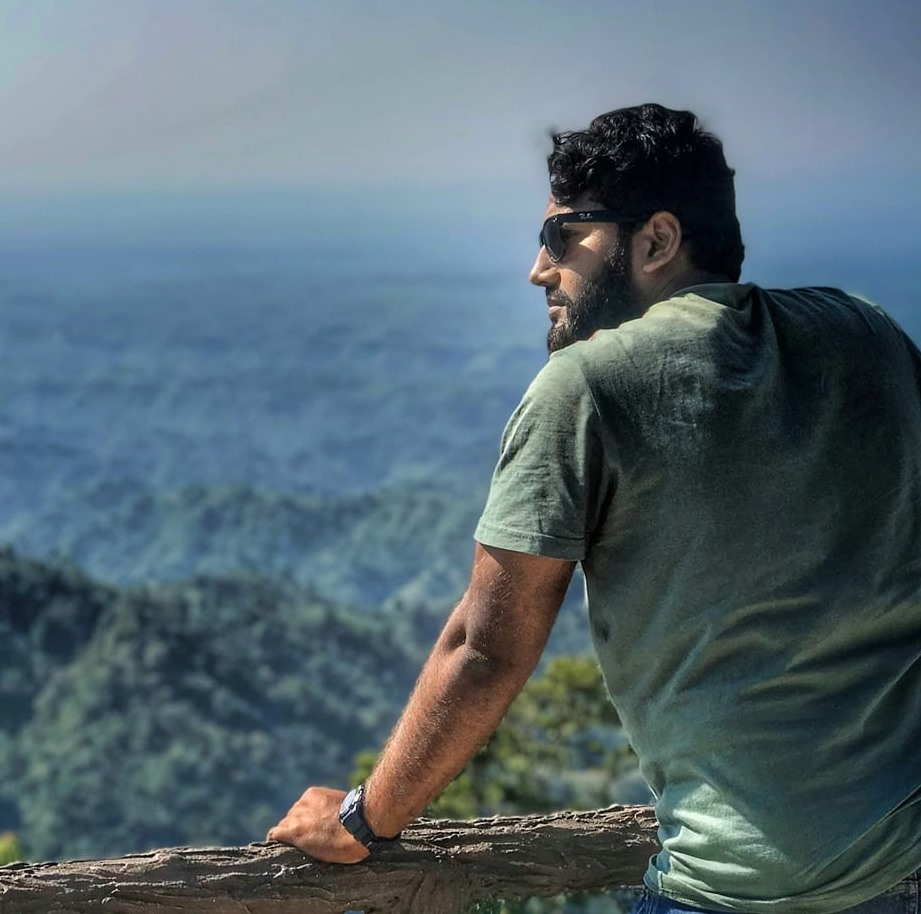
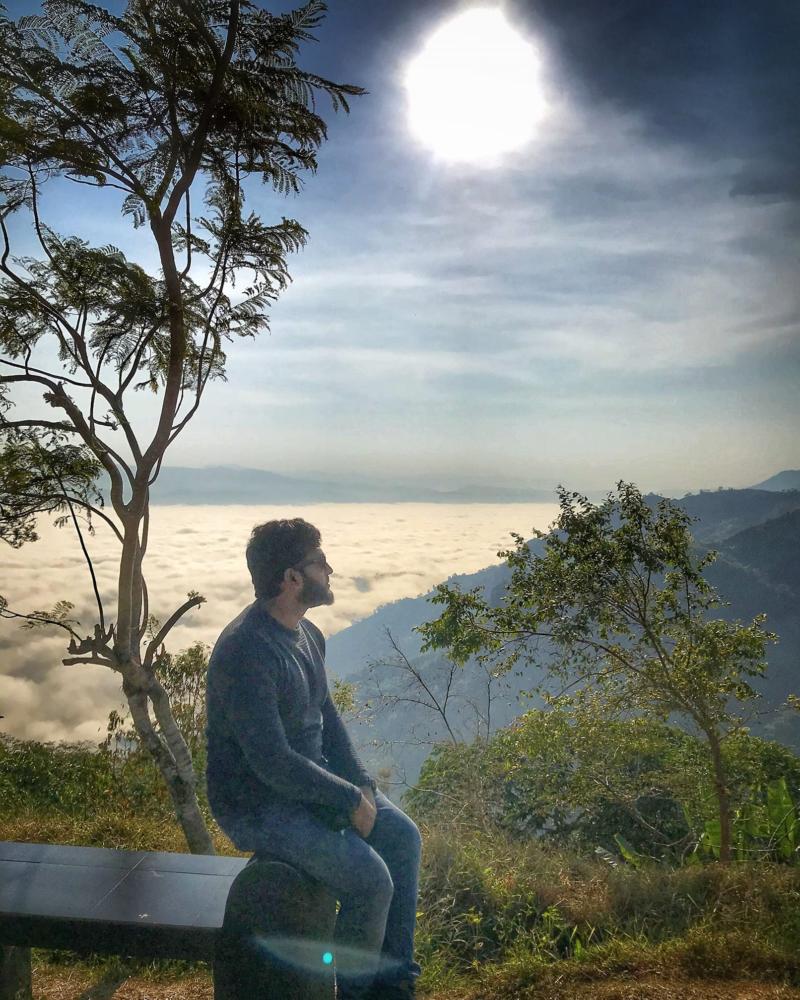
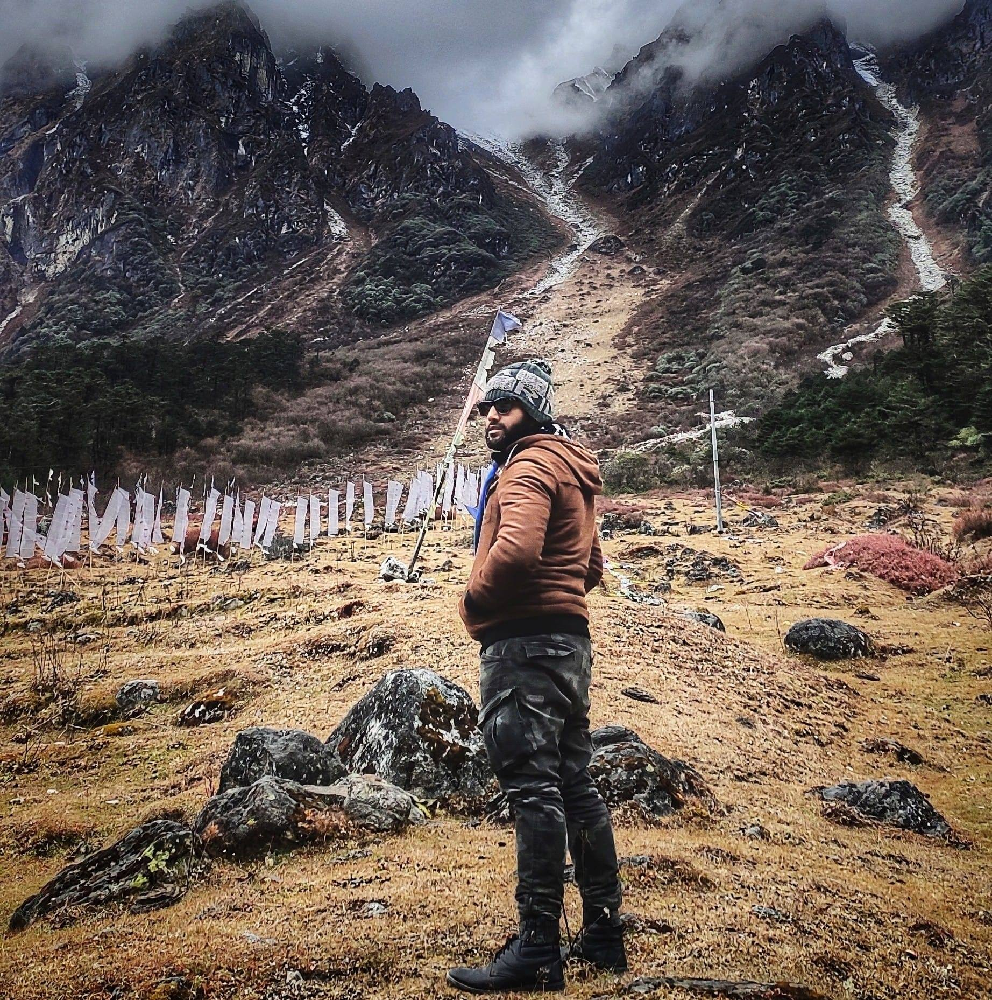

Hello there, I am Mohammad Mohiuddin and I am very excited to learn web development. I complete my graduation from UITS in 2014 and Post graduating in 2015 from Finance.
I am a web developer and this is my fokira web site
Author: Travel Ninja
Bandarban, is a district in South-Eastern Bangladesh, and a part of the Chittagong Division. It is one of the three hill districts of Bangladesh and a part of the Chittagong Hill Tracts, the others being Rangamati District and Khagrachhari District. Bandarban city is the headquarters of the Bandarban district. Bandarban district (4,479 km2) is not only the most remote district of the country, but also the least populous (population 292,900). There is an army contingent at Bandarban Cantonment.
Author: Travel Ninja
Sikkim is a state in northeastern India. It borders the Tibet Autonomous Region of China in the north and northeast, Bhutan in the east, Nepal in the west, and West Bengal in the south. Sikkim is also close to India's Siliguri Corridor near Bangladesh. Sikkim is the least populous and second smallest among the Indian states. A part of the Eastern Himalaya, Sikkim is notable for its biodiversity, including alpine and subtropical climates, as well as being a host to Kangchenjunga, the highest peak in India and third highest on Earth. Sikkim's capital and largest city is Gangtok. Almost 35% of the state is covered by the Khangchendzonga National Park – a UNESCO World Heritage Site.